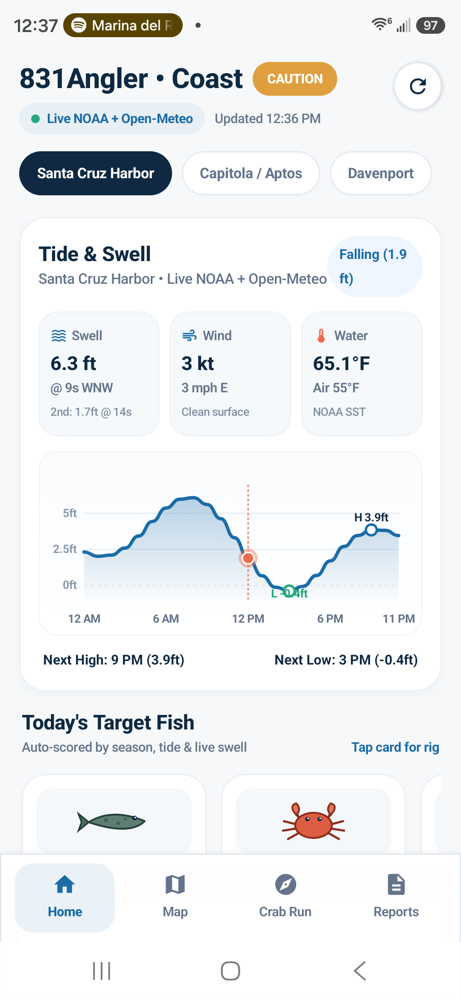
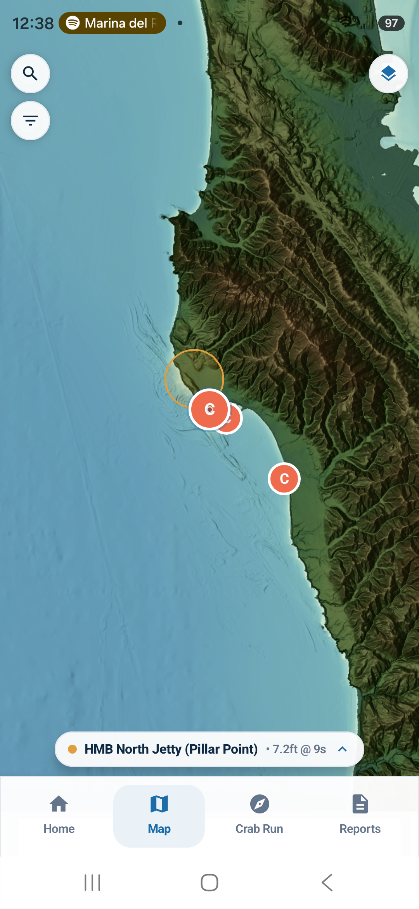
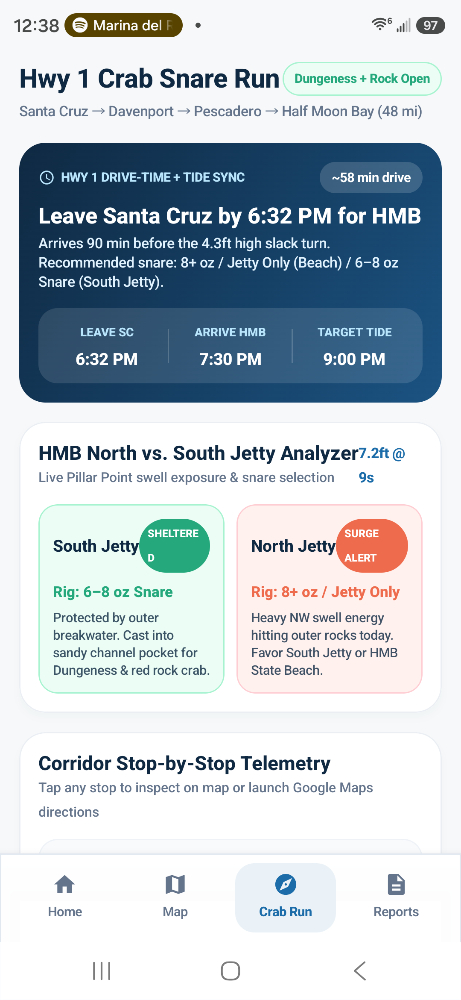
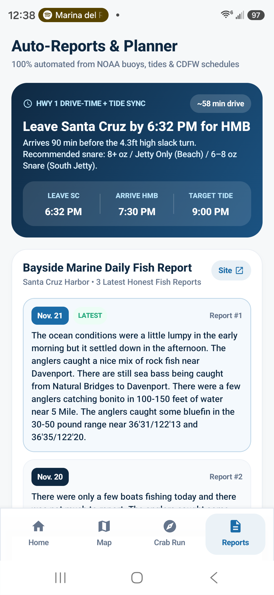

Built for anglers fishing Monterey, Moss Landing, Watsonville, Aptos, Capitola, and Santa Cruz and running north up Highway 1 through Davenport & Pescadero to Half Moon Bay. Powered by live NOAA buoys, Open-Meteo swell telemetry, high-zoom 3D multibeam bathymetry, 1-touch GPS crab net drops, and live Bayside Marine daily reports.


Designed with a high-contrast Coastal Daylight palette so you can read tide curves, snare weight recommendations, and 3D reef contours in bright beach or jetty sunlight.
Quick location pills (Santa Cruz Harbor, Capitola/Aptos, Davenport, Pescadero, HMB), GO/CAUTION/NO-GO badge, cubic-Bezier tide curve, and 0–100% auto-scored target species.
Zoom-19 NOAA NCEI 3D multibeam seafloor relief, NOAA ENC nautical charts, MPA boundary rings, 1-touch GPS crab net drops, and offline ocean tile caching.

Synchronizes your 58-minute drive from Santa Cruz to Half Moon Bay around high/slack tide turns and compares live swell surge between HMB North vs. South Jetties.

Automatically pulls the 3 latest daily fishing reports from Bayside Marine Santa Cruz alongside auto-generated regional briefs, CDFW domoic acid links, and live harbor webcams.
Switch between NOAA NCEI 3D Multibeam Bathymetry (revealing every nearshore reef shelf, kelp pinnacle, sand trough, and the Monterey Submarine Canyon), official NOAA Electronic Navigational Charts (ENC) with depth soundings, and OpenStreetMap trails right down to individual pier pilings.
Dropping hoop nets or crab traps from a kayak or boat? One tap on +Net GPS marks your exact GPS coordinate and timestamp. Long-press any reef or beach trough on the chart to save custom named fishing spots with depth, structure, and bait notes.
Davenport Landing, Waddell Creek, Bean Hollow, and Pescadero are notorious cell dead zones. 831Angler runs an automated WorkManager sync that caches NOAA tides, swell forecasts, Bayside reports, and up to 600 MB of offline ocean chart tiles directly to your phone.
Automatically calculates when to leave Santa Cruz (~58 min drive) so you arrive at Half Moon Bay 90 minutes before the high/slack tide turn. Recommends exact lead snare weights (3–4 oz, 4–6 oz, 6–8 oz, or 8+ oz / Jetty Only) from live wave height and period.
Pulls and caches the 3 latest "Honest Fish Reports" straight from Bayside Marine at the Santa Cruz Harbor—so you always know where the white seabass, halibut, rockfish, lingcod, Dungeness crab, and offshore bluefin are biting.
Scores Dungeness Crab, Barred Surfperch, California Halibut, Nearshore Rockfish, and Lingcod from 0–100% using current season regulations, tide swing, swell energy, wind speed, and water temp. Tap any fish card for best tide window and rig setup.